RestaurantS over world
Eating in restaurants is never in order to satisfy the need of hunger and only, but also the place should be comfortable for the nerves and the eye as well, with the provision of distinguished services to spend a special and enjoyable time and not just for meals. If the restaurant provides distinguished service to customers with a distinctive architectural design and overlooks a wonderful place and view, it will certainly be a refined and distinctive restaurant. Today and in this article, we present to you 10 of the finest and most beautiful restaurants around the world that overlook a stunning and distinctive view that relaxes the nerves and the eye and makes the food taste another, and the place is a special pleasure.

FRANCE
Restaurants in EGYPT
Egypt is the city in which you find everything, distinguished by all its tourist components that made it few for all tourists, and among those components are restaurants, where it has a wonderful group of restaurants that offer various types of food to enjoy during tourism in Egypt.
Eating authentic Egyptian food is an irreplaceable opportunity in one of Egypt's beautiful restaurants, which vary to satisfy all tastes of visitors, and in addition to Egyptian dishes, there are restaurants in Egypt that serve wonderful Asian food and the most famous international kitchens
Abu El Sid Restaurant
Abou El Sid Restaurant is one of the most famous Egyptian restaurants in Cairo. It serves authentic Egyptian cuisine that dates back to the Fatimid state, and the menu includes a variety of appetizers. The atmosphere of the restaurant is charming with its woodwork, overhead lighting, and classical Egyptian music. There are large tables for groups. It has many branches.
Between the traditional atmosphere and the folkloric form of design and decoration, Abu El Sid Restaurant, one of the most beautiful restaurants in Cairo, will impress you, and is located in a number of areas of the Egyptian capital, Cairo. Which gives the place a special charm.
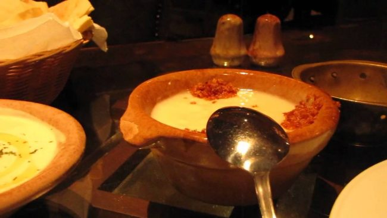
Kaddoura fish restaurant
Kaddoura Restaurant is a famous name in the world of Egyptian restaurants that offers the best fish meals. When you enter the restaurant, you head to a place that resembles a fish market, and choose what you like from the fish, then choose the method of cooking the fish you prefer, grilled, fried or casserole, without a menu as if you were at home.
If you are a fan of seafood and fresh fish, dear traveler, do not hesitate to visit Qadwa Fish Restaurant during your visit to the Egyptian capital, Cairo. Prepare it in the best way.
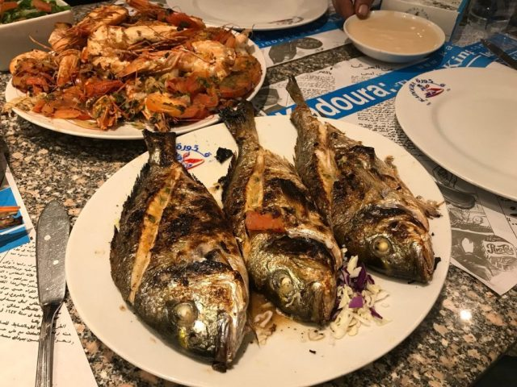
Koshary Abu Tarek
For the most beautiful experience of discovering Egyptian koshary, head to Abu Tarek Restaurant in the city center. Since 1950, Abu Tarek has been photographed on CNN and is now famous all over the world for preparing this famous dish, which consists of a mixture of rice and pasta. And lentils, with a spicy tomato sauce garnished with chickpeas and crunchy fried onions, with garlic vinegar or chili sauce.
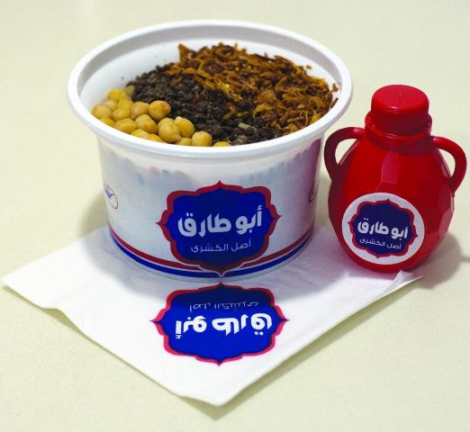
The revolving restaurant at the Grand Hyatt
It is one of the famous Cairo restaurants that embraces the sky with its high altitude, to complete its 360-degree rotations every 75 minutes with the clock, during which its lights are reflected on the waters of the Nile to paint the breathtaking painting with the three pyramids with an incomparable charm. A unique experience full of fun and adventure.
The revolving restaurant is located on the 41st floor of the Grand Hyatt Hotel (Grand Nile Tower Cairo), which is one of the most luxurious hotels in Cairo, which represented an important part in the tourism sector in Egypt. The revolving restaurant is one of the first outstanding restaurants in the Middle East, which won the best performance for 2012 And it was crowned according to TripAdvisor, which granted it this certificate after a survey among its goers, thus gaining its worthy place among Cairo's five-star restaurants.

Restaurants in GREECE
The city of Athens, the Greek capital, is one of the most important tourist cities in Greece. It has many tourist places and historical and archaeological sites, in addition to many picturesque tourist areas. In addition to all this, it also enjoys a group of high-end hotels. The most important characteristic of Athens hotels is the good service and comfort for guests. In addition to the distinctive Athens hotels, you will also find a group of Athens restaurants that come at the forefront of the following list that we recommend to you among the best restaurants in Athens
Byzantine Restaurant
This restaurant is located in the Hilton Athens, located in the heart of the city. It serves a variety of delicious dishes, especially for breakfast and lunch, including some traditional Greek dishes known for their delicious taste. Indeed, it is one of the most luxurious and famous restaurants in Athens.
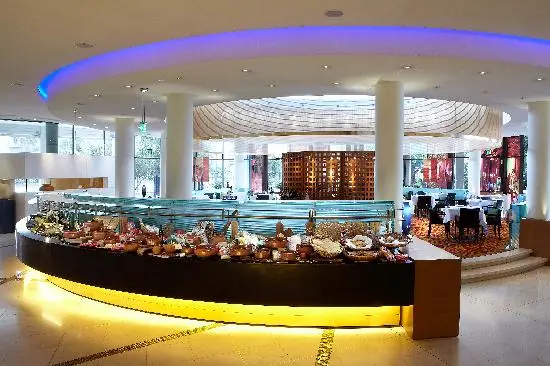
spondi restaurant
This restaurant has two Michelin stars, and it is one of the most prominent restaurants that serve the most delicious dishes, taking you back to the ancient era in terms of the traditional and famous dishes of Greece. In addition to the antique decorations that make you feel that time has gone back in time. It is worth mentioning that this restaurant has won many international awards thanks to the skilled chef “Arnaud Bignon”. The restaurant is located in the Olympic arena, which kicks off the Olympic Games. Therefore, the restaurant is very popular and offers everything that is fresh and delicious, according to the fresh foods available in the markets every day.
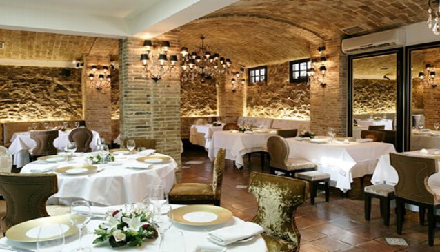
Nargile Kefalari Restaurant
It is one of the famous Lebanese restaurants in Athens, and is known for its oriental decorations and authentic Arabic ambiance. The view of Athens on the Mediterranean Sea always makes it the link between the Arab and European peoples. It really represents the link in the cultural interdependence between countries. As for the dishes offered by the restaurant, there is nothing wrong with the diversity of dishes, especially the Lebanese and oriental dishes, in addition to a variety of Western dishes.
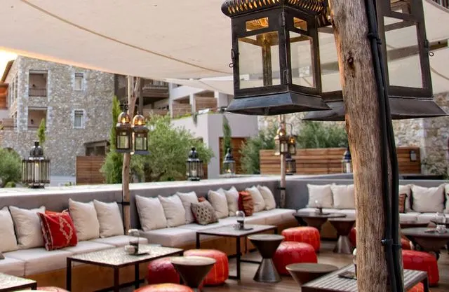
Mecca Restaurant
This restaurant is originally Indian and Pakistani and serves a great selection of delicious dishes. And add to all this that all the dishes it offers are “halal”, and that is why it attracts a large number of Arab and Muslim tourists. When you enter the restaurant, you feel at ease, as its decorations are very simple, which makes you feel comfortable, which increases when tasting the most delicious meals. If you are a fan of eating dishes from the Indian cuisine, this restaurant offers a very distinctive selection and will be the perfect choice for you. It is one of the distinctive Athens restaurants.
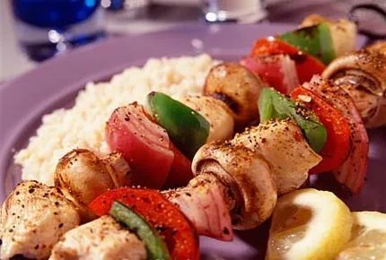
Restaurants in ITALY
It is a destination for food lovers, where the fence goes to enjoy Italian food, and the distinctive spirit that dominates its cafes and restaurants, so here are the best and most famous restaurants in Italy to try on your next visit.
Enoteca Pinchiorri Restaurant
The restaurant is considered one of the most famous Italian restaurants, and the most important thing that distinguishes it is that the chef responsible for cooking in the restaurant is the chef “Annie Feld”, the first woman in Italy to excel in cooking. A 3-star restaurant, the restaurant is located in the charming city of Florence, and the restaurant contains the most delicious Italian innovative dishes of risotto, saffron and dried fruits
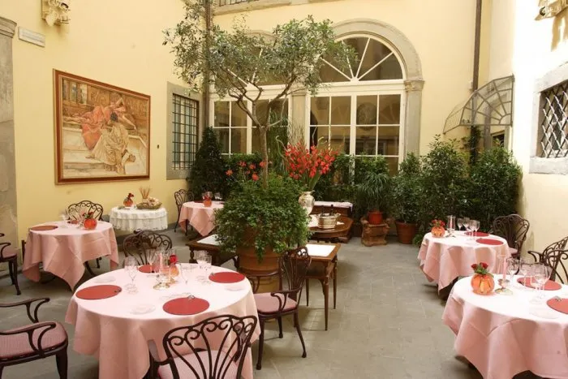
Disco Restaurant
Desco restaurant is one of the best Italian restaurants and contains the best and cheapest menu in Italy. Il Desco restaurant is unique in its delicious sauces such as the wonderful caramel sauce and the delicious lettuce sauce. The restaurant is located in the Italian city of Verona.
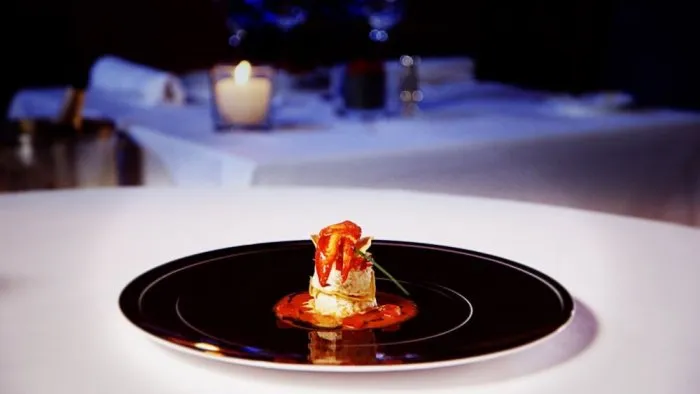
El Villagio Restaurant
Il Villaggio restaurant is located inside the Italian “Four Seasons” hotel, and the chef “Vito Monica” makes the best culinary menu in Italy, and among the delicious dishes that the chef offers is the “Mushroom Risotto” “Chateaubrian Foie Gras” and many other wonderful Italian dishes.
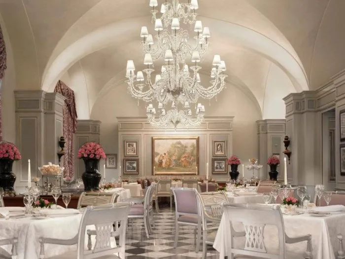
Restaurant Da Fortunato
The restaurant is located in the center of Rome where millions of tourists and celebrities come to it. The restaurant serves traditional Italian cuisine such as fresh fish, spaghetti and pastries with exquisite seashells with garlic and hot red pepper. In addition to these delicious dishes, you will find desserts such as ice cream, pear ice cream, caramelized walnuts, and many other delicious dishes.
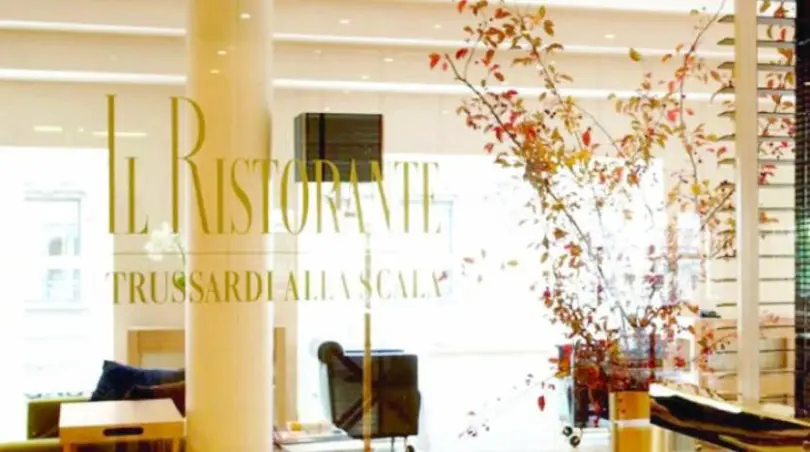
Restaurants in INDIA
There are good restaurants, and there are other wonderful ones that make dining an enjoyable and distinctive experience. The wonderful restaurants transform the catering service into something closer to the fine arts, and they are always keen to raise the level of service provided to be able to survive and continue successfully in light of the great competition between restaurants, especially in countries Like India where people are very appreciative of good food.
High-end restaurants in India have large numbers, but some of them have been able to thrive and gain the loyalty of many customers thanks to their distinction from other high-end restaurants
Indian Accent
Located in a small boutique hotel, The Manor, Indian Accent is an innovative and unusual restaurant in New Delhi where Chef Manish Mehrotra prepares local foods with contemporary international cuisine in new and unexpected ways, using roasted coconut and pickled tomatoes, with the addition of Roasted peanuts, peanut butter and other local ingredients.
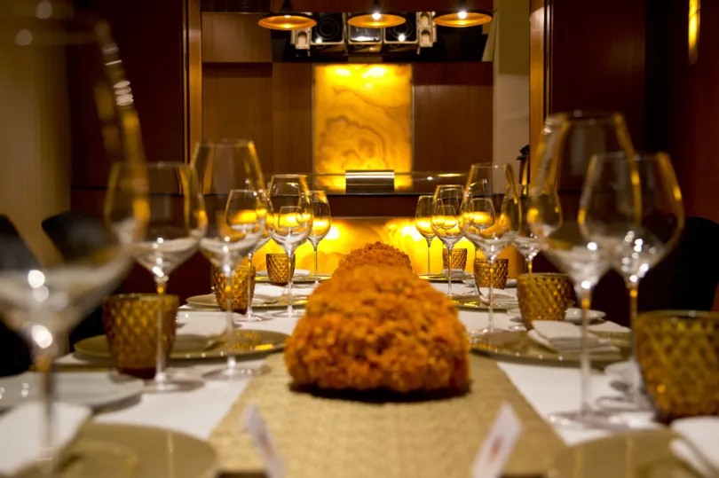
Muti Mahal
Moti Mahal is located in the Daryaganj area, and is one of the oldest and wonderful historical restaurants in Delhi. It dates back to 1947, shortly after Indian independence. It stands out among other Indian restaurants for its amazing recipes, chicken dishes and wonderful kebabs, and it is even a great place to savor These are North Indian dishes, and many of the city's visitors come to try the most delicious Indian delicacies.
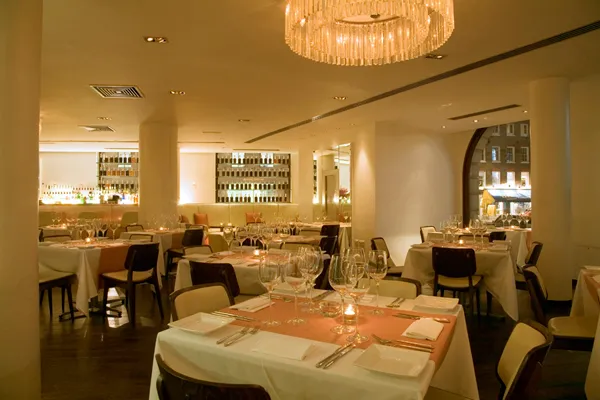
Bukhara
This amazing restaurant is ranked as one of the top 50 Asian restaurants, as well as one of the best restaurants in New Delhi and India in general, thanks to its distinguished meals in a perfect and unforgettable atmosphere, from the world-renowned kebabs to the amazing kofta that it has been famous for since its inception in 1977.
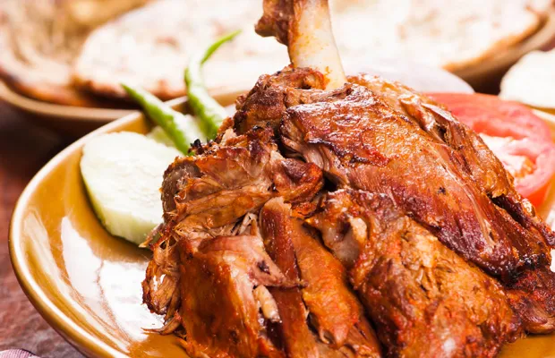
Punjabi by Nature Restaurant
Punjabi by Nature Restaurant is another restaurant that is very popular among tourists and locals in New Delhi, even now it is expanding to multiple locations across the city, and as its name suggests, it specializes in preparing delicious meals with the finest fresh ingredients that add the original taste of the dishes Including lamb and black lentils with butter and cream, as well as chickpeas, potatoes and onions.
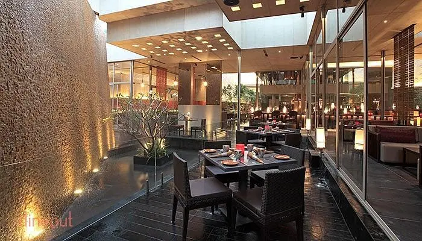
Restaurants in SPAIN
When it comes to the quality of restaurants, you cannot exclude restaurants in Spain from the competition. Spain ranks next after France, Germany and Italy for the most Michelin-starred restaurants, with 224 restaurants. However, eleven of the restaurants received a maximum rating of three stars
El Pescador Restaurant
When you're looking for fresh fish, you wouldn't expect a landlocked town 300 km from the nearest beach to be the place to get a meal of fish, but you didn't know yet that El Pescador is one of the few Madrid restaurants that delivers their fish twice a day from all over the country.
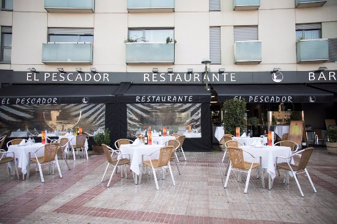
Verpal Restaurant
Verbal is a classic Madrid deli that sells the best ham, cold cuts and cheese in town. It's always crowded with grandmothers coming to buy some jamón iberico for lunch.
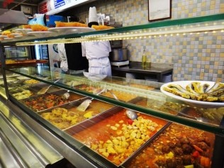
Restaurant Stop Madrid
It is a wine lover's haven, especially if you are traveling alone or as a couple. The difficulty is always finding a bar with a restaurant with a good wine list sold by the glass and not the whole bottle. spoil.
Enter Stop Madrid, a classic wine bar with around 100 bottles of wine that will gladly open any of them for you if they aren't already open. Taste wines from the famous regions of Ribera del Duero and La Rioja or try the lesser known wine regions, such as Madrid or (which is the kind My favorite character is Toru.
Of course, Spanish wines always pair well with a plate of Manchego, as well as cheese and chorizo for the meat-eaters, and all dishes served are of excellent quality to match the finest wines.
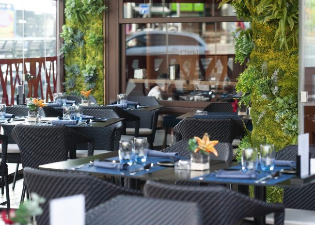
Restaurant El Brillante
One of the most famous dishes in Madrid is the Bocadillo de Calamares: a baguette filled with fried squid rings, there is nowhere better known for this dish than El Brillante.
Restaurants for diners have faded from Spain in the past 15 years, most shops closed and replaced with more trendy venues, but El Brillante is still a testament to its quality.
Located in front of the Atocha train station, near the Reina Sofa Museum, almost every visitor to the Spanish capital passes by this restaurant. It might seem a little scary at first, with the bar staff shouting orders across the room to the kitchen, but that's part of the charm of the place.
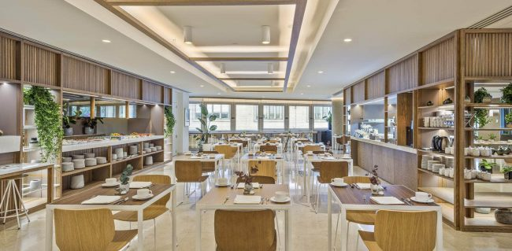
Restaurants in TURKEY
Istanbul includes wonderful and diverse restaurants that cater to all tastes, and offer the most delicious dishes from the famous Turkish cuisine, in addition to the most delicious international and Arab dishes. There are restaurants overlooking the sea and distinguished by their wonderful location, Taksim restaurants, and popular cheap restaurants, as well as luxury restaurants in European and Asian Istanbul.
The ancient mix of cultures has had a huge impact on the food scene in Istanbul, where you can enjoy different cuisines from authentic Ottoman food, with its delicious mezze, to Turkish cuisine with its famous grills. If you are a lover of baklava, also do not miss to try the traditional Turkish dessert, this is the right place.
Suda Kebab Restaurant
Suda Kebap Restaurant is one of the best restaurants in Istanbul. It is famous for its diverse local dishes, which include a wide variety of Turkish cuisine, especially the famous Antabian cuisine, in addition to dessert dishes and others.
Souda Kebab Restaurant serves different local cuisines in an elegant and friendly atmosphere that can be sensed from the interior design of the restaurant, where it welcomes its visitors with its wide tables and wooden floors. Here you will find luxurious items ranging from all kinds of kebabs to harissa and special baklava, and you can enjoy delicious foods and desserts. Kitchen in Gaziantep.
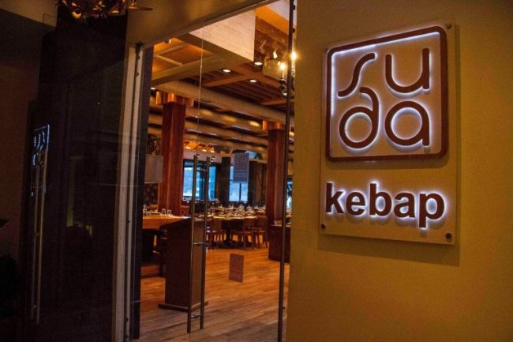
Nusrat Istanbul Restaurant
Nusrat Steak House Istanbul, famous in Turkish as Nusr-Et Etiler, is one of the most important and luxurious Istanbul restaurants specializing in wonderful meat and steaks.
It is reported that its owner, Nusret Gökçe, of Turkish origin, was living in America and mastered the art of cooking and grilling meat and was creative in it. He opened his famous restaurant, Nusret Restaurant in Istanbul in 2010 AD, so that his restaurant was classified as the best in serving grilled meat, and this is what made him open other branches in Istanbul, Ankara and Dubai as well
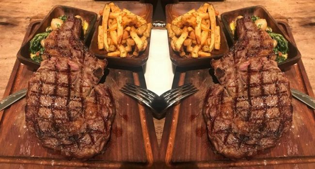
city restaurant istanbul
Another icon that shines in the sky of Istanbul, thanks to its wonderful varieties of the most delicious types of food inspired by the delicious Turkish cuisine, which is rich in its many options. Excellence in Al-Madina Restaurant does not limit its limits only to the wonderful tastes, but goes far beyond that. In keeping with the saying that Al Ain loves first, the chefs there are keen to present their dishes in a highly artistic way, accompanied by wonderful fireworks and musical performances, that make the guest live an unforgettable experience. It is noteworthy that this restaurant is frequented by many celebrities, due to its luxury and the quality of services provided in it. He owns more than one branch in the city.
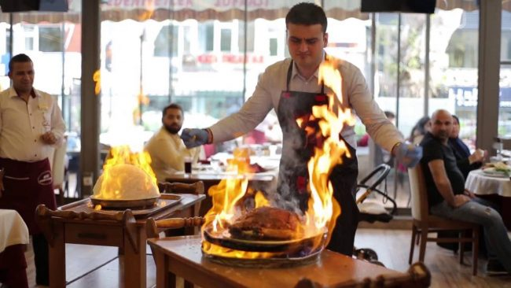
Hatay Suversi Restaurant
Close to the “Historia” mall located in the Fatih area, this famous restaurant overlooks you with a variety of delicious Turkish meals, in a distinctive atmosphere that reflects the customs and traditions of the people of the wonderful Hatay region; There the visitor will find a varied menu, including the best local cuisine; From appetizers, to delicious desserts;
Enjoy there the best options, especially chicken and lamb with salt, which the restaurant is famous for preparing in front of visitors. As for the services, they are of a high level of quality, as there is an Arabic menu available, in addition to a staff of the same language.
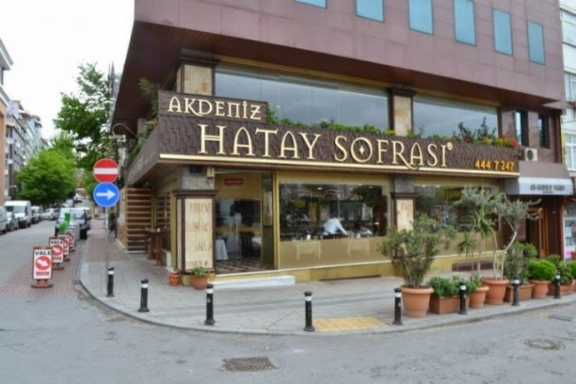
Restaurants in FRANCE
The city of Paris, the French capital and the most beautiful cities of France, the city of lights and the capital of fashion, not to mention being the most important destination for lovers of shopping and fashion.
Nora Paris Restaurant
Noura Restaurant in Paris is a Lebanese restaurant that serves various types of oriental Arabic foods such as tabbouleh, arais, pastries and kibbeh, in addition to sweets and ice cream. It is considered the best Arabic restaurant in Paris and has many branches, one of which is on the famous Champs Elysees Street. The restaurant has a beautiful atmosphere and elegant decor. The staff at Noura's restaurant are mostly Arabs.
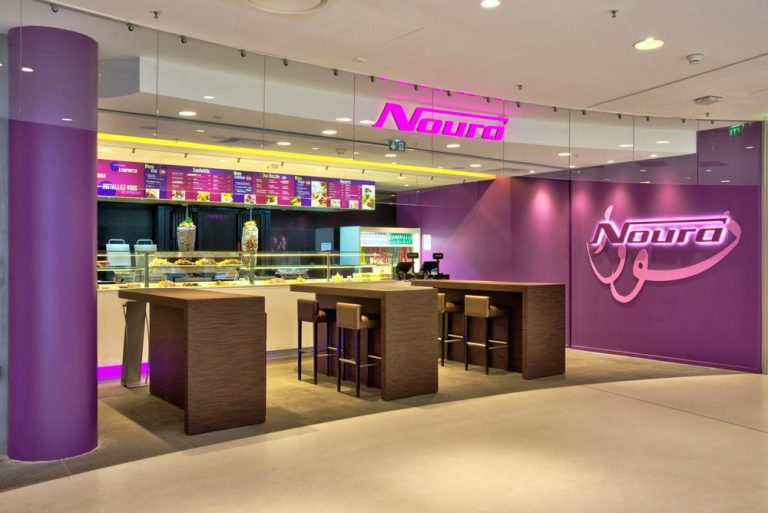
Al-Ajami Restaurant, Paris
Al-Ajami Restaurant in Paris is distinguished by its oriental dishes, and it is a Lebanese restaurant that features a steak dish. The prices in this restaurant are a bit high, but the food it serves is considered the most delicious, and it is one of the most famous Arab restaurants in Paris. The restaurant is located on a street off George V Avenue, King Francois I Street.
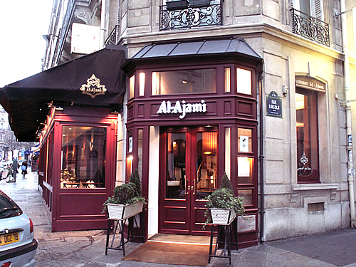
Pino Pizza Restaurant
Pino Pizza Restaurant is one of the most famous restaurants in Paris that specialize in Italian dishes. The restaurant is very suitable for lovers of pizza and pasta on the Italian way. It is located near the George V station
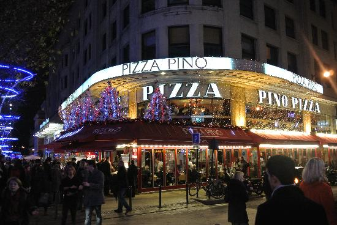
Pasco Restaurant
One of the best restaurants in Paris that serves Mediterranean dishes in addition to the delicious meals of the southern region of France. It provides a rich and varied menu that includes simple yet delicious meals, reasonable prices, and offers recipes in new ways and different flavors.
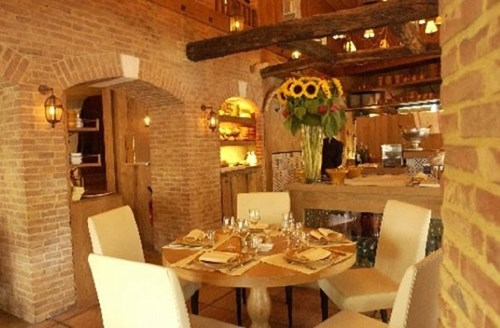
Maindishes over world
Eating in restaurants is never in order to satisfy the need of hunger and only, but also the place should be comfortable for the nerves and the eye as well, with the provision of distinguished services to spend a special and enjoyable time and not just for meals. If the restaurant provides distinguished service to customers with a distinctive architectural design and overlooks a wonderful place and view, it will certainly be a refined and distinctive restaurant. Today and in this article, we present to you 10 of the finest and most beautiful restaurants around the world that overlook a stunning and distinctive view that relaxes the nerves and the eye and makes the food taste another, and the place is a special pleasure.
FRANCE
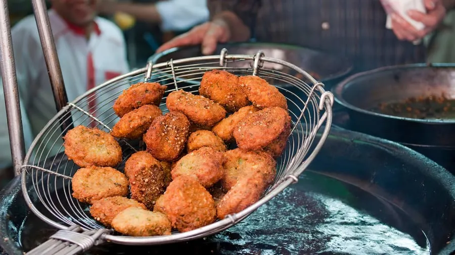
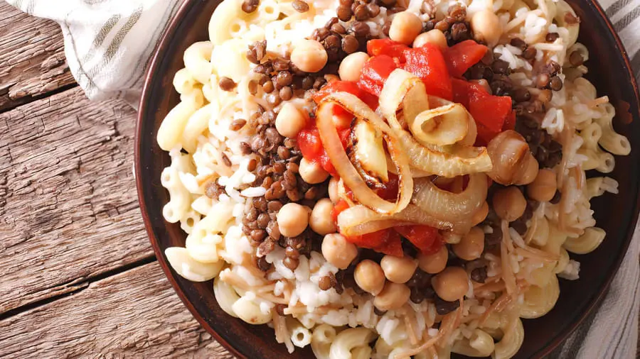
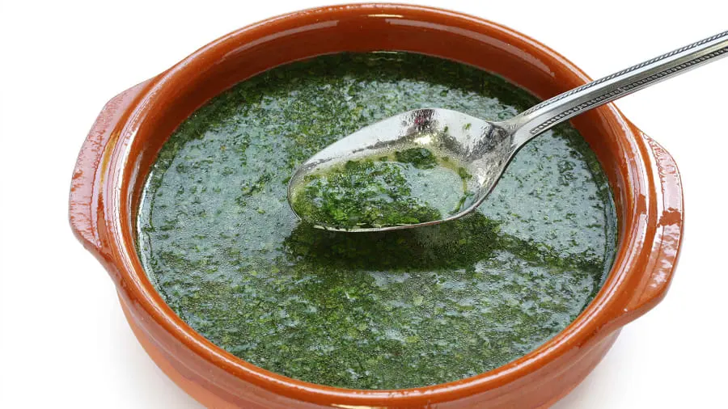
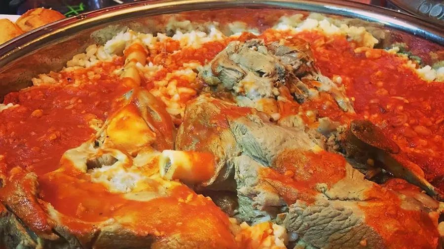

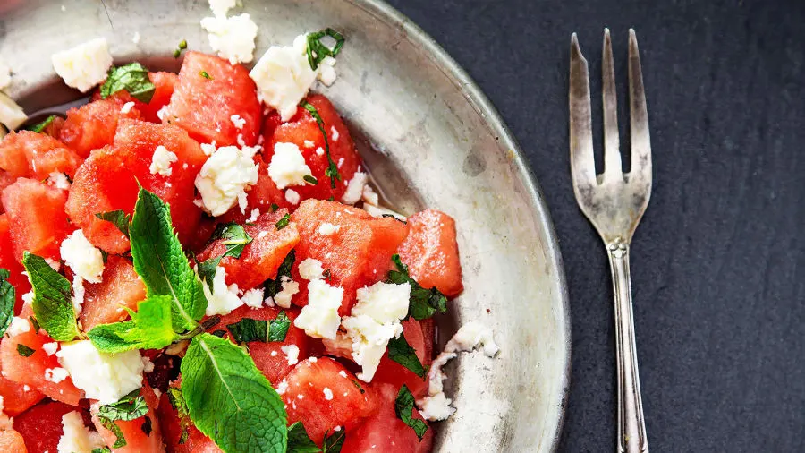
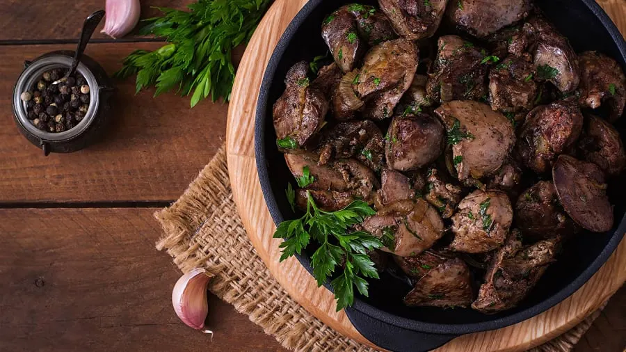
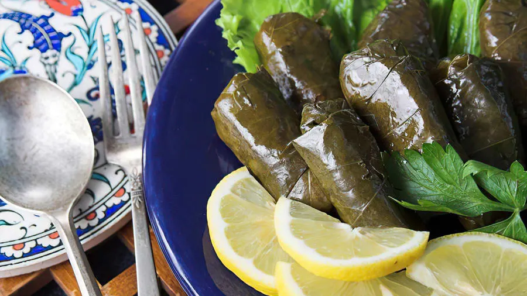
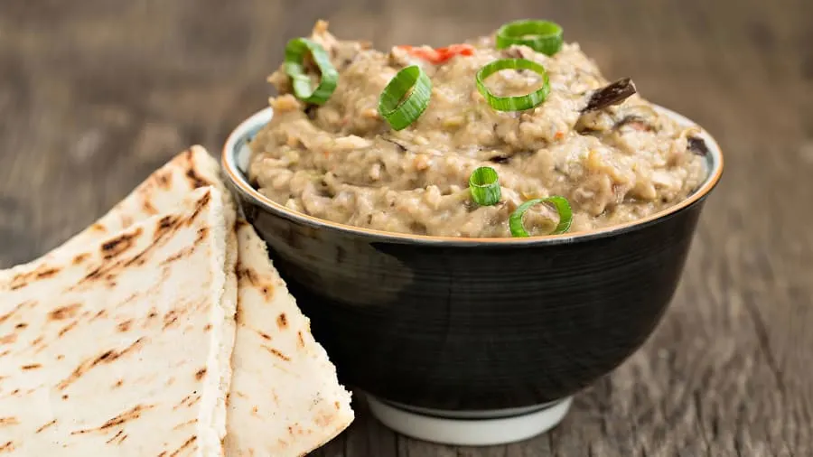
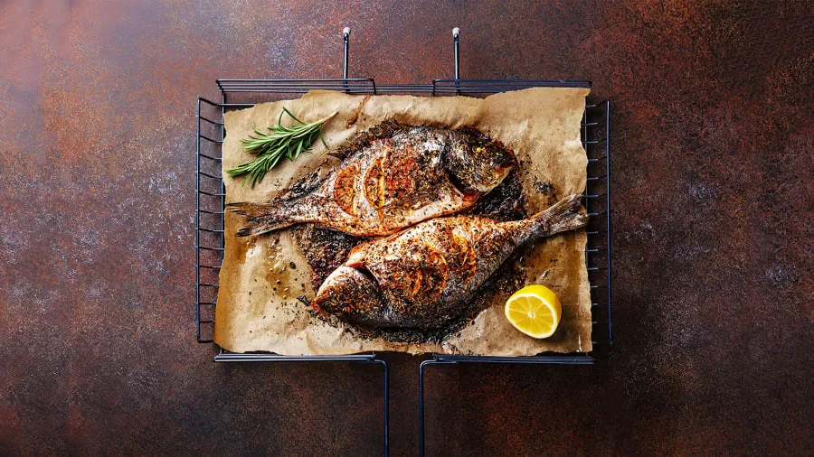
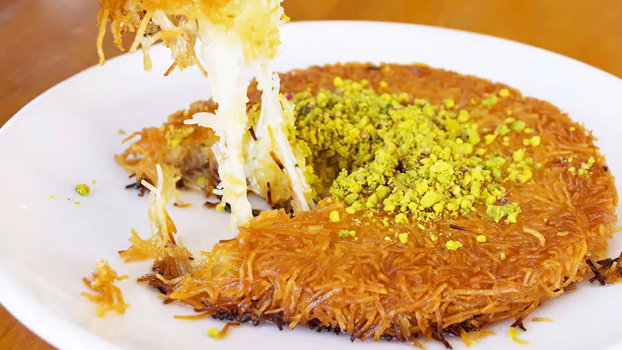
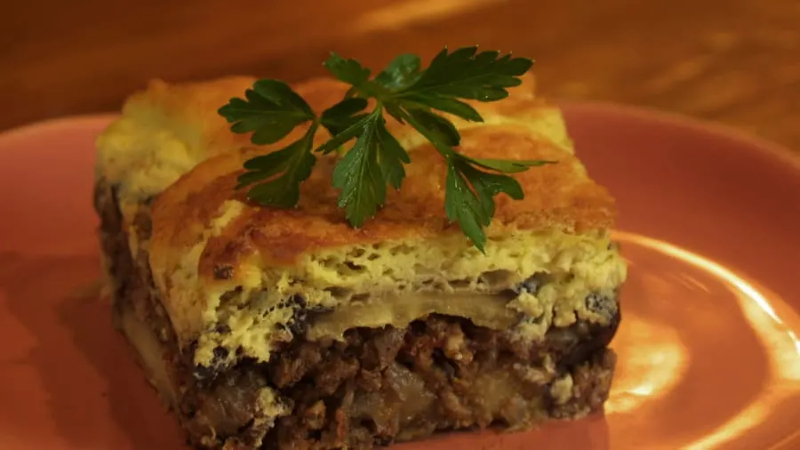
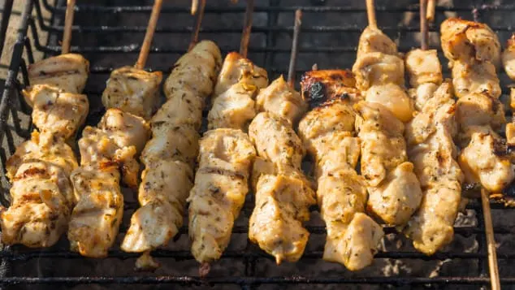
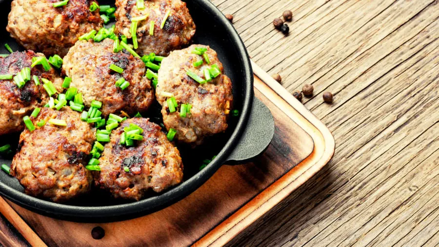
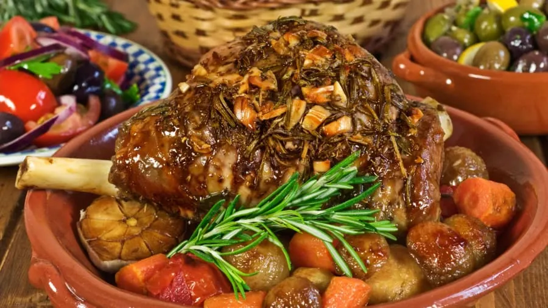
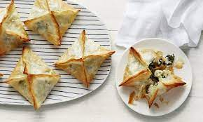
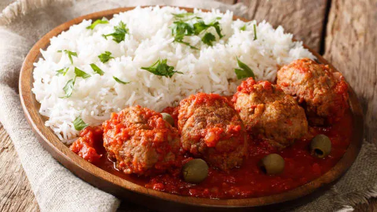
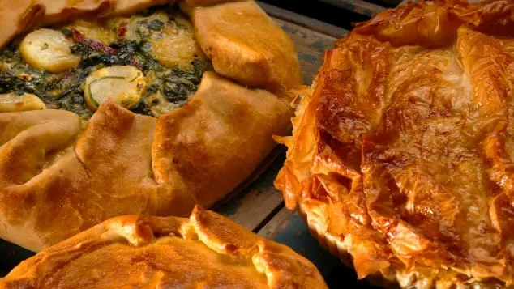
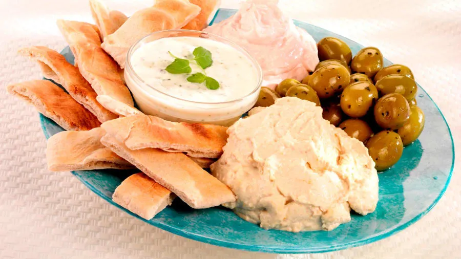